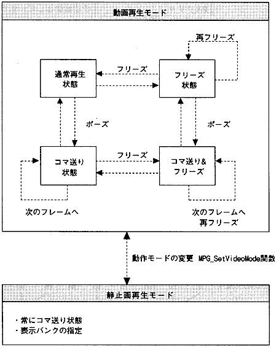
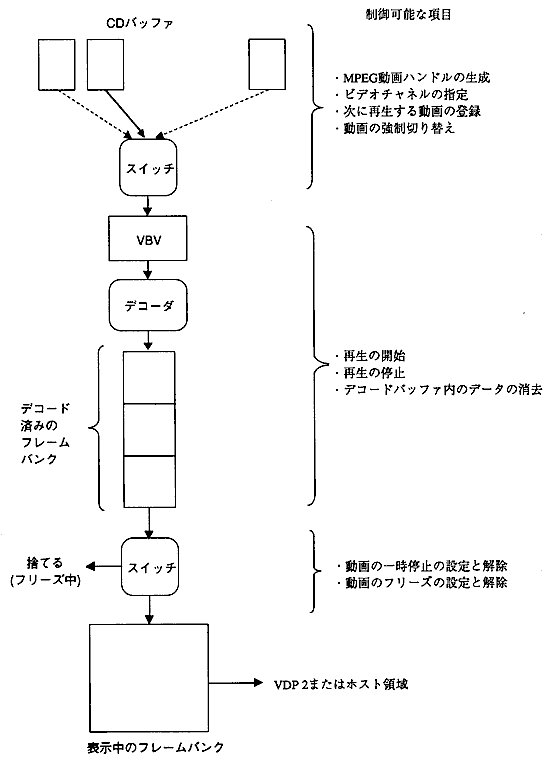
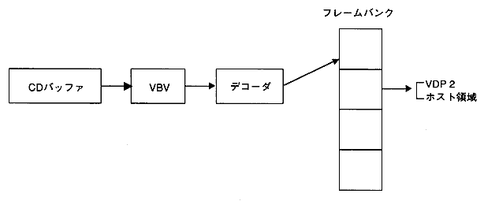
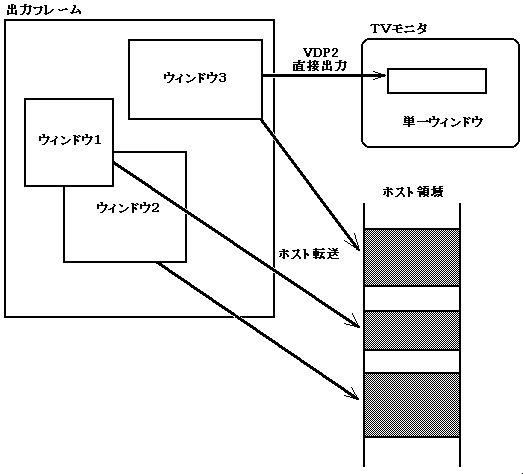
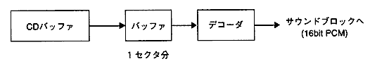

★PROGRAMMER'S GUIDE
★MPEGライブラリ
★PROGRAMMER'S GUIDE
★MPEGライブラリ
▲
戻る｜
進む▼
MPEGライブラリ
3.動作概要
- MPEGライブラリは、ビデオの再生に対して以下の2つの動作モードを持っています。
- (1)動画再生モード
- 動画を再生するモードです。通常再生状態、フリーズ状態、ポーズ状態、ポーズ＆フリーズ状態があります。
- (2)静止画再生モード
- 静止画を再生するモードです。通常の解像度で4バンク、高精細の解像度で1バンク分の画像が表示できます。
オーディオは常に再生することができます。また、ビデオとオーディオの同期を取ることもできます。
図3.1 動作モード

3.1 動画再生
- MPEGビデオのデータは、CDからCDバッファに読み込まれ、デコーダによってフレームバンクに展開されます。このフレームバンクに展開されたイメージデータを、順次表示することによって動画となります。フレームバンクのデータ表示方法は、VDP2に直接出力する方法とホストによってVRAMに転送し表示する方法があります。以下にデータの流れを示します。
図3.2 動画再生時のデータの流れ

3.2 静止画再生
- 静止画再生モードでは、CDバッファ中のビデオストリームデータをフレームバンク番号を指定してデコードすることができます。出力するフレームバンク番号を指定して、VDP2に直接出力したり、ホストによってVRAMに転送し表示したりできます。
図3.3 静止画再生時のデータの流れ

3.3 画像データの出力方法
- 出力フレームバンク内のイメージデータ領域に出力ウィンドウを作成し、データを出力することができます。データの出力方法には、以下の2通りの方式があります。
- VDP2直接出力方式
- ホスト転送方式
- ホスト領域に転送するときには複数の出力ウィンドウを、VDP2に直接出力するときにはただ1つの出力ウィンドウを作成することができます。
また、これらのウィンドウに様々な映像効果を与えることができます。
図3.4 出力ウィンドウ

- 映像効果
- トリミング(画像の切り出し)
- 拡大・縮小
- フェード
- モザイク・ぼかし
- ルミネッセンスキー
3.4 MPEGオーディオの再生
- MPEGオーディオの再生は、CDバッファから読み出されたストリームデータをデコードし、サウンドブロックへ出力することによって行われます。
図3.5 オーディオの再生

▲
戻る｜
進む▼
★PROGRAMMER'S GUIDE
★MPEGライブラリ
Copyright SEGA ENTERPRISES, LTD., 1997